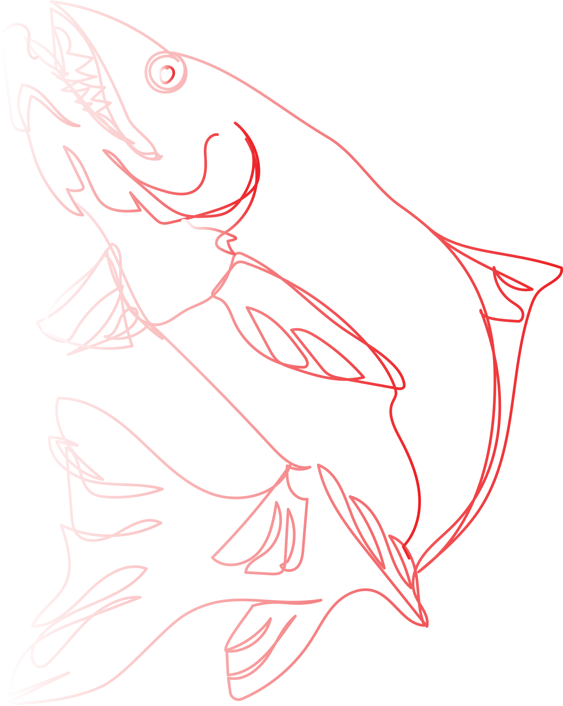

the ocean surface layer absorbs about one third of human-released CO2.
100 million marine animals die each year from plastic waste alone.
many marine animals mistake plastics for their food. they clog their stomachs with plastic and become malnutritioned, eventually starving to death.
researchers estimate anywhere between 15 and 51 trillion microplastic particles floating at the ocean surface from the poles to the equator.
small fish have the most microplastics per gram of tissue.
ocean acidity has increased about 25% from preindustrial times to the early 21st century, a pace faster than any known in Earth's geologic past.
the acidity of the ocean is greater than any point in the past two million years.

carnivorous fish, which make up the majority of commercial fish that humans eat, tend to have more microplastics in them than omnivores.
diving deeper
resurface
next